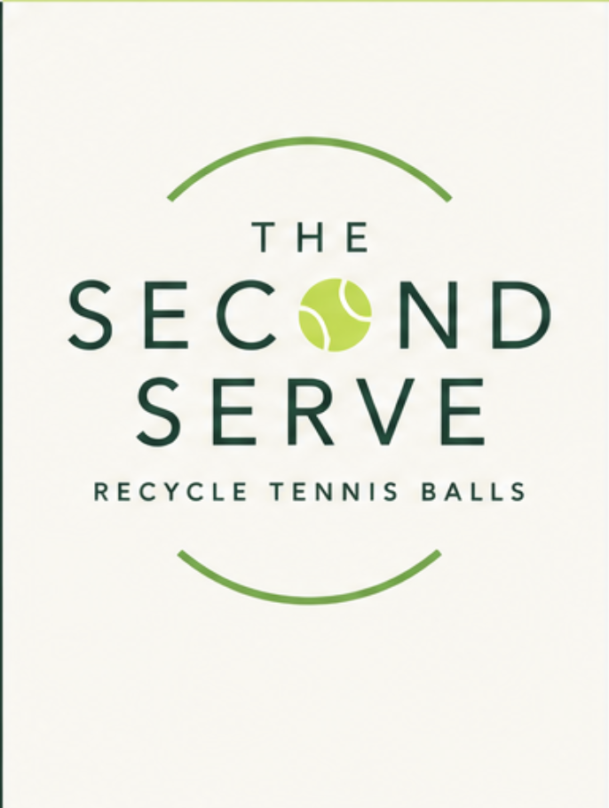

Collect
We work with local tennis centers to collect used tennis balls.

KALAMAZOO • MICHIGAN
The Second Serve collects used tennis balls from tennis centers in the Kalamazoo area and works to give them a second life instead of letting them go to waste.
Used doesn't have to mean useless. We're starting in Kalamazoo and building a model that can grow.
OUR MISSION
Tennis centers go through large numbers of tennis balls. Once a ball is no longer suitable for regular competitive play, its useful life can still continue.
The Second Serve is building a simple collection system that gives those balls another purpose. We are beginning with tennis centers throughout the Kalamazoo area with the goal of eventually expanding beyond Southwest Michigan.
Build relationships with tennis centers across the Kalamazoo area.
Create a collection model that can be repeated and scaled.
Take the idea to more communities as the program grows.
HOW IT WORKS
We work with local tennis centers to collect used tennis balls.
Collected balls are organized so they can be directed toward their next use.
Instead of immediately becoming waste, each usable ball gets another opportunity.
STARTING IN KALAMAZOO
We're starting close to home, working with tennis centers in the Kalamazoo area. As the program develops, we want to bring the same idea to larger communities.
Partner with The Second Serve and help us build our local collection network.
Become a partner →Help us spread the word as we establish the program and grow beyond Kalamazoo.
Get in touch →LET'S GET STARTED
If you're a tennis center, organization, or community member interested in The Second Serve, we'd love to hear from you.